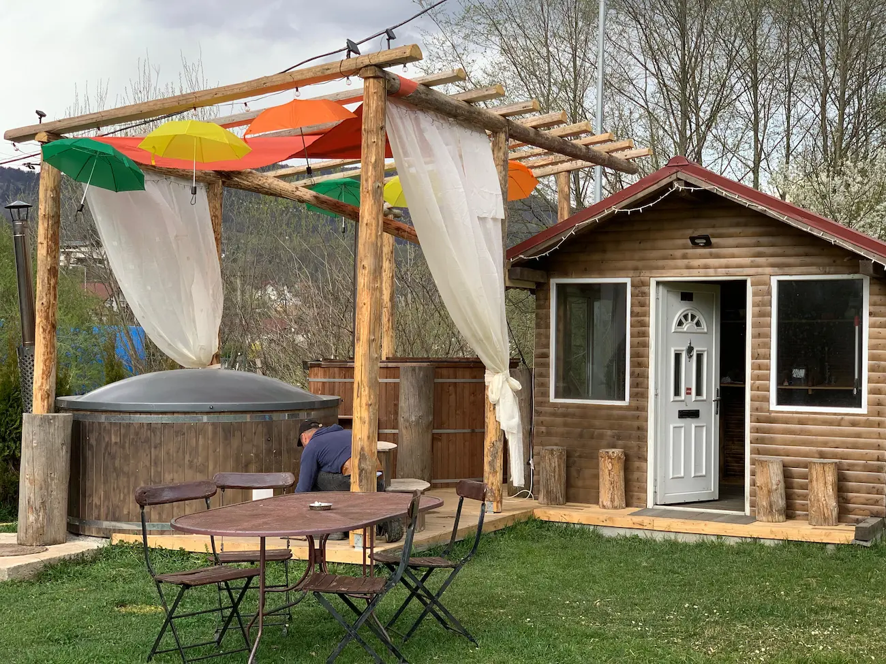
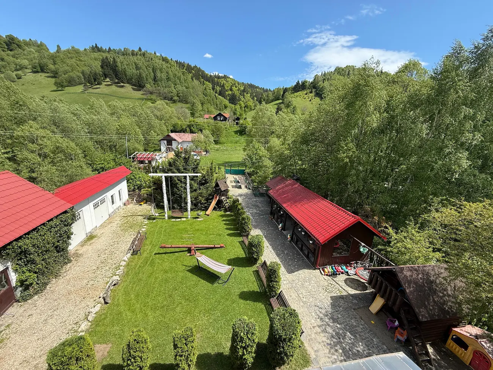
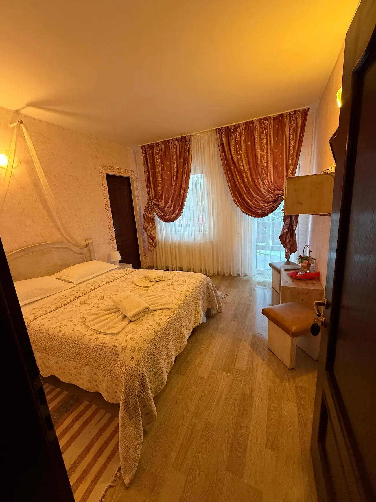
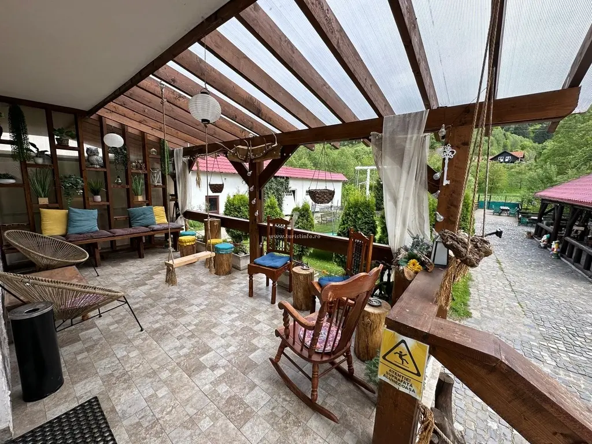

Camere cu baie proprie
Alege camera dublă sau family. Ambele au balcon.
Camere pentru cupluri și familii, cu ciubăr în curte. Camera dublă pornește de la 240 lei / cameră / noapte.
Disponibilitatea și costul folosirii ciubărului se confirmă separat pentru datele tale.

Pensiunea se află în Moieciu de Jos, în zona Bran–Moieciu. Ai bucătărie comună, terasă, grătar și sală de jocuri pentru timpul petrecut la pensiune.
Alege camera dublă sau family. Ambele au balcon.
Pregătirea, disponibilitatea și condițiile de folosire se stabilesc direct.
Parcare privată în curte și Wi-Fi gratuit pentru oaspeți.



Costul și condițiile de folosire se confirmă direct, împreună cu disponibilitatea pentru perioada aleasă.
Menționează ciubărul când ceri disponibilitatea. Îți confirmăm pregătirea și condițiile de folosire înainte de rezervare.
Camera dublă este pentru 2 persoane, de la 240 lei/cameră/noapte. Camera family este pentru 2 adulți și 2 copii, de la 320 lei/cameră/noapte. Tariful final se confirmă pentru datele alese.
Scrie pe WhatsApp sau sună la 0742 599 860. Trimite perioada, numărul de adulți și copii și menționează că dorești să folosești ciubărul. Rezervarea se confirmă direct cu pensiunea.
Trimite perioada și numărul de oaspeți. Îți răspundem cu disponibilitatea și tariful.